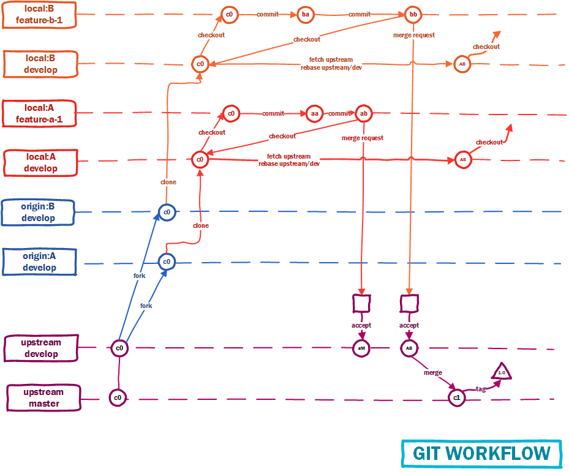
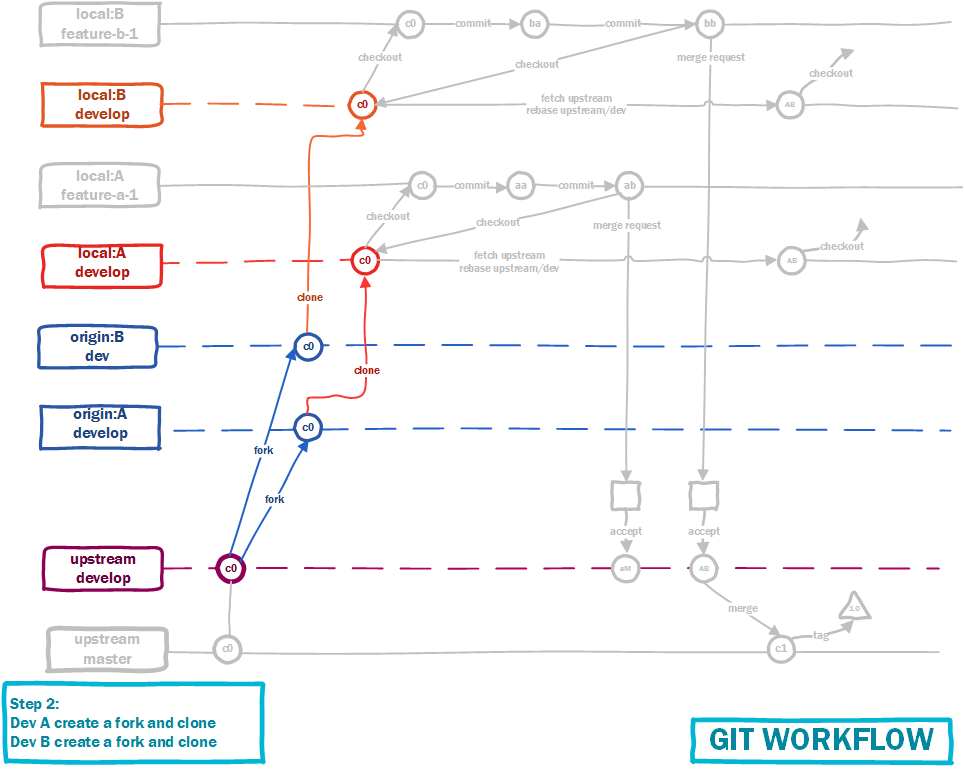

Team Workflow
In this article, I will represent our workflow with git to collaboration. As you can see, there are upstream, A, B repositories. Upstream repostiroy is main repository of project, owner by team leader. A and B repositories belong to developers. In upstream remote, there are master and develop branches. In developer's repositories, there are develop and feature-something branches.

Step 1: Create new project
In step 1, leader create a repository.

Step 2: Forking
In step 2, each developers create their own repository by forking main repository

Step 3: Commits
In step 3, developers work on their branches, each peace of their works should be end by a commit
Step 4: Merge Requests
After finish a feature, each developer will create a merge requests to main repository. Leader take responsibility for merging their requests

Step 5: fetch and rebase
Developer will checkout to develop branch, fetch from upstream remote and rebase

Step 6: Develop new features
Team sync. At this moment, developer can checkout from develop branch to create new feature.
Step 7: New version
Leader take responsibility to merge from dev branch to master branch and create tag to release new version.